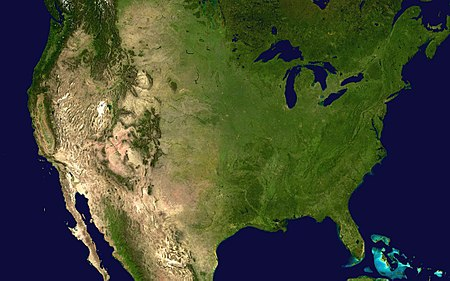
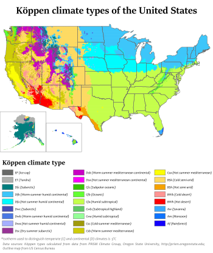
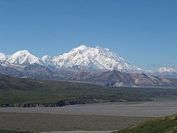
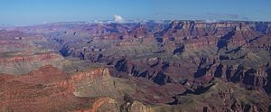

Termenul "Statele Unite", atunci când este utilizat în sens geografic, este Statele Unite, statul Alaska, statul insular Hawaii, cele cinci teritorii insulare din Puerto Rico, Insulele Mariane de Nord, Insulele Virgine SUA, Guam și Samoa americană și posesiuni minore învecinate. Statele Unite împărtășesc granițele terestre cu Canada și Mexic și frontierele maritime cu Rusia, Cuba și Bahamas, pe lângă Canada și Mexic. Granița nordică a Statelor Unite cu Canada este cea mai lungă frontieră terestră bi-națională a lumii.


Datorită dimensiunilor sale și gamei largi de caracteristici geografice, Statele Unite conțin exemple de aproape orice climat global. Clima este subtropicală în sudul Statelor Unite, tropicală în Hawaii și Florida de sud, polar în Alaska, semiaridă în Marile Câmpii la vest de meridianul 100, mediteraneeană în California de coastă și arid în bazinul mare și sud-vest. Climatul său agricol relativ favorabil a contribuit (în parte) la creșterea țării ca putere mondială, cu secetă severă frecventă în regiunile agricole majore, o lipsă generală de inundații și un climat temperat predominant care primește precipitații adecvate.

În nordul Alaska, tundra și condițiile arctice predomină, unde temperatura a scăzut la -80 ° F (-62.2 ° C). La celălalt capăt al spectrului de frecvențe, Death Valley, California, a atins o dată la 56,7 ° C, cea mai mare temperatură înregistrată vreodată pe Pământ. În porțiunile centrale ale SUA, tornadele sunt mai frecvente decât oriunde altundeva pe Pământ și se ating cel mai mult de obicei în primăvară și vară. Uraganele ucigase și distrugătoare apar aproape în fiecare an de-a lungul coastei atlantice și al Golfului Mexic. Regiunea Appalachian și Midwest au cea mai mare inundație, deși practic nici o zonă din S.U.A. nu este imună de inundații.
